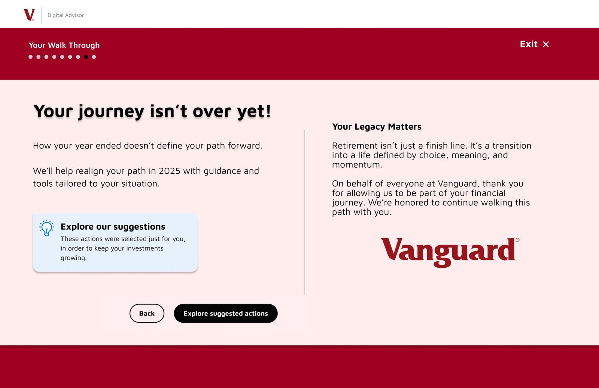

UX Designer
Vanguard Year in Review
A team redesign of Vanguard’s Year in Review for people at or near retirement age. I ran one of our five usability tests, then made my own redesign: a style guide, a persona, a journey map, and a 10-screen prototype. I pitched it to Vanguard’s team, leading with renaming it a “walkthrough,” and they responded well.
Read the case study →